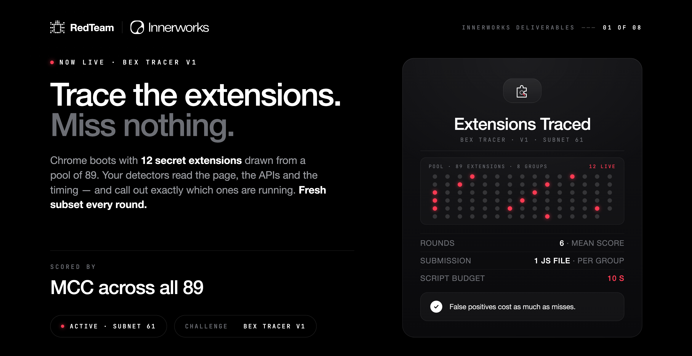

Given a browser with a secret set of extensions enabled, identify which ones.
| Pool | 89 extensions in 8 groups |
| Enabled per round | 12, coverage-weighted and redrawn each round |
| Rounds per submission | 6 |
| Round execution | sequential, one browser at a time |
| Settle before sampling | 6s + 1.5s after gestures |
| Network | not restricted by Compose; bait page on private loopback HTTPS |
| Script budget | 10s |
| Submission | one file per group, ≤750 lines and 262,144 bytes each |
| Chrome | Chrome for Testing 152.0.7977.54 |
One file per group, each defining its own function, all loaded by the page:
| window.detect_<group> | async, returns { name: boolean } for that group's names |
| missing key | counted as false |
| key outside the pool | dropped |
| one group throws | only that group's names count as false |
| one group exceeds 10s | that group's names count as false |
MCC over all 89 labels per round, clamped to [0,1], averaged over 6 rounds.
| Answer | Score |
|---|---|
| all true | 0 |
| all false | 0 |
| random | ≈ 0.08 |
| all correct | 1 |
| failed round | 0, stays in the mean |
Scored over the whole pool, so false positives on the 77 that were off cost the same as misses. MCC rather than F1 because it is the one that counts true negatives.
| Signal | Mechanism | Reach |
|---|---|---|
| Web-accessible resources | fetch chrome-extension://<id>/file | closed: ids rotate every round |
| Changed APIs and values | browser settings and behaviour an extension alters | most of the pool |
| Replaced functions | native functions wrapped by the extension | several |
| Page footprint | injected nodes, stamped attributes | a few |
One static page, identical every round:
#ad-banner, .adsbygoogle, .ad-slot<input type="password">Six fixed gestures run on it each round — click the cookie banner, type into username, password and notes, click the editor, scroll to the banner. Identical every round, so they leak nothing.
| GET /task | returns the 89 names and their 8 groups |
| POST /score | takes {miner_input, miner_output}, returns a float |
| GET /results | last run's status, timings, detections and score; never ground truth |
| X-API-Key | required on /score and /results |
| concurrency | one scoring run at a time, else 429 |
Ghostery ships all 33 blocking rulesets disabled until onboarding completes. Bitwarden has no page footprint without an unlocked vault. Labels that cannot be earned.
Same 89-name pool every time, so a behavioral detector built once keeps working and every miner converges on it. The validator zeroes submissions that are too similar to each other.